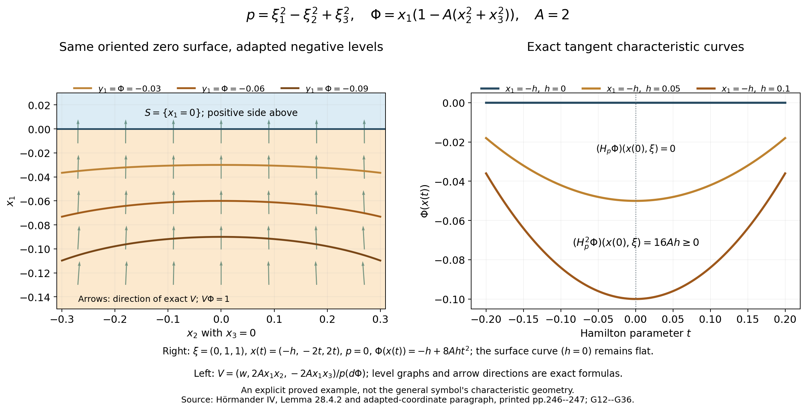
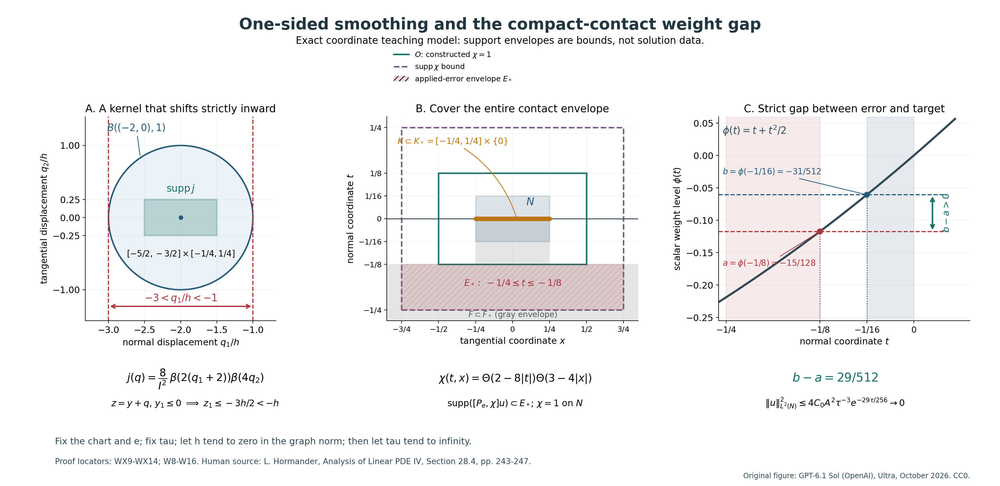

Weak convexity, one-sided approximation, and compact contact
A weak convexity condition can give local uniqueness even when the strict surface curvature test vanishes. The proof has two tasks: find a useful defining function on the allowed side of the surface, then turn a weighted estimate into a statement about weak solutions. The first task is geometric. The second uses small spatial scaling, an approximation that stays on one side, and a cutoff covering the entire contact set.
This lesson gives the complete arguments for both tasks, followed by six solved exercises totaling 50 points. It receives the stated lower scalar positivity, finite calculus, Fourier, Schur, Sobolev, density and smooth-coordinate interfaces. It does not replace those interfaces with citations or claim that every lower prerequisite has been independently closed. The two figures show exact coordinate mechanisms and have explicit human-source and proof locators.
The local statement and the standing hypothesis
Let \(P\) be a second-order left differential operator near \(x_0\), with smooth real homogeneous quadratic principal symbol \(p(x,\xi)=\xi^TG(x)\xi\), \(G\) real symmetric, and locally bounded lower coefficients. Retain the surrounding strong fiber condition: \(G(x_0)\) is invertible, equivalently \(p_\xi(x_0,\xi)\ne0\) for every nonzero real covector. Let \(\psi\) be smooth and real, with noncharacteristic conormal \(p(x_0,d\psi(x_0))\ne0\). On the nearby surface \(\psi=\psi(x_0)\), assume \(H_p^2\psi\ge0\) whenever \(p=H_p\psi=0\).
The arguments below choose a sufficiently small full neighborhood \(Y\) before the solution. If \(u\in H^1_{\mathrm{loc}}(Y)\), \(Pu=0\) in distributions, \(u\) is supported on \(\psi\le\psi(x_0)\), and the entire support-contact set with the surface is compact inside \(Y\), then \(u=0\) in a neighborhood of \(x_0\). The final neighborhood can depend on that compact contact set. The conclusion does not assert vanishing throughout \(Y\). The C² defining-function extension is proved by a direct strict-barrier argument in C² surfaces and compact-contact uniqueness.
The displayed Theorem 28.4.3 in the source does not repeat the strong fiber condition from the surrounding section. The present lesson proves the statement with that condition retained. The broader interpretation omitting it is refuted by the complete compact-contact counterexample in Why weak convexity needs the fiber hypothesis. Noncharacteristicity alone does not supply the invertible tangential matrix used in the proof.
The conventions throughout are \(D=-i\partial\) and \(\{a,b\}=a_\xi\cdot b_x-a_x\cdot b_\xi\), with \(H_pf=\{p,f\}\). The first coordinate points toward the positive side; allowed solution support lies on its nonpositive side. A negative scalar multiplying the principal symbol changes the constrained second Hamilton derivative by a positive square, whereas a negative factor multiplying the defining function reverses the orientation.
How the arguments fit together
The geometric component first studies the normal form and then proves how a general noncharacteristic real quadratic symbol reaches it. Its adapted-coordinate construction uses the normalized polarized field, so its flow parameter is exactly the defining function. The remaining coordinates follow that flow and remove the mixed principal terms. The modified function \(\Phi=x_1(1-A|x'|^2)\) keeps the original oriented zero surface and extends the weak inequality to the negative side. The constants are selected in the order \(A\), then the neighborhood size, then the later spatial scale.
The analytical component proves a uniform principal estimate in that normal form. The normal and tangential controls have different strengths: the conjugated estimate has \(\tau^2\) on the normal derivative of the conjugated function, while the printed weighted estimate has \(\tau\) on the normal derivative of the original function and coefficient one on its tangential derivatives. The tangential control comes from the square of the fiber gradient of an invertible quadratic matrix, which can be indefinite. All finite adjoint and commutator errors are retained before absorption.
The weak-solution component next uses small spatial scaling to absorb bounded lower terms. One-sided convolution puts every smooth approximant strictly inside the analytical test domain, and the complete coefficient commutator argument gives convergence in the principal graph norm. At each fixed weight parameter, that passage extends the estimate to the compact weak input. Only then does the weight parameter tend to infinity.
Finally, a cutoff equal to one near the whole compact contact set puts its applied commutator support strictly below the surface. A scalar weight gap separates this error from a smaller target neighborhood and forces local vanishing. The exercises ask the reader to verify the powers, zero-coefficient branches, graph limit and support gap on fully specified examples.
The three proof components and six exercise solutions below retain their complete mathematical arguments and all tagged displays. The connected lesson retains the exact input hypotheses of each component.
Weak convexity on the negative side and adapted quadratic coordinates
This geometric argument treats Hörmander IV, Lemma 28.4.2 and the adapted-coordinate paragraph following it, printed pp. 246–247; the surrounding hypotheses appear on pp. 242–243. The fixed conventions and real cotangent covariance agree with PN2, PN3 and the following coordinate calculation in the preceding lesson on principal normality; the positive orientation agrees with Section 1 of the preceding lesson on strong pseudoconvexity. These receiving interfaces retain their declared lower prerequisites.
1. Scope, hypotheses and the invariant surface test
Let n>=2 initially. Near the origin, let r(x,xi') be a real homogeneous quadratic form in the n-1 tangential fiber variables xi', with smooth coefficients, and put
\[ p(x,\xi)=\xi_1^2-r(x,\xi'),\qquad H_p f=\{p,f\},\qquad \{a,b\}=a_\xi\cdot b_x-a_x\cdot b_\xi. \tag{G1} \]The strong fiber condition is
\[ r_{\xi'}(0,\xi')\ne0\quad\hbox{for every real }\xi'\ne0. \tag{G2} \]It is equivalent in this normal form to p_xi(0,xi)!=0 for every nonzero real xi, since p_xi=(2xi1,-r_xi'). This is stronger than a nonzero full phase-space gradient only on the characteristic set. Assume, on some surface neighborhood x1=0, |x'|<b_initial, that
The source's closure of the scaled half-cylinder contains exactly this surface neighborhood, and only a smaller compact neighborhood is used below. We prove: there is A_0>=1 such that for every fixed A>=A_0, a sufficiently small delta>0 gives, for
\[ w(x')=1-A|x'|^2,\qquad \Phi=x_1w, \qquad -\delta/2\le x_1\le0,\quad |x'|\le\delta, \tag{G4} \]the inequality H_p^2 Phi>=0 on the exact set p=H_p Phi=0. Here w is positive, so Phi<=0 is precisely x1<=0; its zero surface and positive side are the original oriented surface and side. We include the boundary x1=0 even though the analytic test functions later lie in the open negative half-cylinder. Constants A and delta are selected in that order.
For comparison, if f=a psi represents the same smooth local oriented surface as psi, translated to psi=0, with a>0 there, the product rule gives
\[ H_p f=aH_p\psi+\psi H_pa,\qquad H_p^2f=aH_p^2\psi+2(H_pa)H_p\psi+\psi H_p^2a. \tag{G5} \]Thus on psi=p=Hp psi=0, the second derivative is multiplied by the positive a. Every smooth defining function for the same oriented surface has this local factorization by the fundamental theorem of calculus in a chart whose first coordinate is psi. This proves the on-surface weak test is intrinsic to the oriented surface. The terms containing psi in G5 explain why this alone says nothing about its extension away from that surface. The construction G4 supplies the negative-side extension instead of assuming such invariance.
2. Uniform finite bounds and smooth division at real characteristics
Choose b>0 small so the compact cylinder |x1|<=b, |x'|<=b lies in the coefficient domain, G3 holds on its surface, and G2 persists there. Put q=|xi'| and v=r_xi'. Compactness on the unit fiber sphere and homogeneity give finite constants
Here U,M_r,M_1,M_11,M_b may be zero. All brackets in the last line are tangential brackets: both factors are independent of xi1, so no x1 differentiation contributes to them. These constants use finitely many coefficient derivatives. To obtain kappa uniformly, first take the positive minimum of |r_xi'(0,omega)|^2 on |omega|=1, and then shrink b so the perturbation of the linear fiber-gradient matrix is less than half its smallest singular value. Its quadratic lower bound persists for every q by homogeneity.
We now prove the complete lower bound needed off the surface:
\[ r_1(x,\xi')\ge-C\bigl(|x_1|q^2+|r(x,\xi')|\bigr) \quad\hbox{on a possibly smaller compact cylinder},\qquad C\ge1. \tag{G7} \]On x1=0 work first on the compact base |x'|<=b and unit fibers. At each zero (x'_0,omega_0) of r(0,x',omega), G6 makes some fiber derivative r^(j) nonzero. The implicit function theorem gives a graph xi_j=f(x',xi_hat) for the nearby zero set, in a conic annulus 1/2<|xi'|<2. Shrink the working chart so the graph and the straight segment from xi_j to f remain inside a larger chart where |r^(j)|>=d_j>0 and its sign is fixed. The projected graph point has the same base and is a real characteristic, so G3 applies there. The two exact integral identities are
The first denominator is bounded away from zero, and the numerator is bounded. Thus the quotient a_j of these two integrals is smooth and bounded by a finite number C_j. Equation G8 says r1=r1_on_graph+a_j r; hence r1>=-C_j |r| on the smaller chart. The graph does not change x' or move it outside the surface neighborhood in G3.
Finitely many such charts cover the compact real characteristic set on the surface/unit-fiber set. On the compact complement of their smaller union, |r| has a positive minimum d_0 if the complement is nonempty, while |r1| has a finite maximum M_0. There use r1>=-(M_0/d_0)|r|. Taking the maximum of these finite chart constants gives
The extension from unit fibers to nonzero fibers uses the identical degree-two homogeneity of r1 and r; at zero both are exactly zero. If the characteristic set is empty, the compact minimum of |r| alone gives G9, with no characteristic charts. If the complement is empty, only the finitely many chart constants are needed. This proves the division assertion for all possible constraint-set topologies and supplies finite bounds; it does not divide by r at a characteristic zero.
Taylor's integral formula in x1 and G6 give
\[ \begin{split} |r(x,\xi')-r(0,x',\xi')|&\le M_1|x_1|q^2,\\ |r_1(x,\xi')-r_1(0,x',\xi')|&\le M_{11}|x_1|q^2. \end{split} \tag{G10} \]Combine G9--G10 and choose
\[ C=\max\{1,C_{\rm div},M_{11}+C_{\rm div}M_1\}. \tag{G11} \]This proves G7 with a single finite C, before A is selected.
3. Exact Hamilton formulas and the tangency-sign correction
Let B={r,w}. Direct differentiation, with the convention G1, gives
Consequently at exact tangencies,
\[ \xi_1=\frac{x_1B}{2w} =-\frac{Ax_1}{w}\sum_{j=2}^n v_jx_j. \tag{G13} \]The printed last expression in (28.4.18) on p. 246 has a plus sign. G12, which agrees with the immediately preceding printed equation, requires the minus sign in G13. The subsequent printed identity 4xi1 B=2x1 B^2/w also requires G13. The completed geometric review confirms this bounded source correction.
Expanding the second Hamilton derivative without omitting the mixed term gives
\[ H_p^2\Phi =2r_1w-4\xi_1B +x_1\bigl(\{r,B\}-2\xi_1\{r_1,w\}\bigr). \tag{G14} \]For clarity, Hp xi1=r1, Hp w=-B, and Hp B=2xi1 partial_x1 B-{r,B}. Since w is independent of x1, partial_x1 B={r1,w}. Substitution in Hp(2xi1 w-x1 B) proves G14 with exactly its factors 2 and 4. Further product-rule identities are
The last identity is used only on exact tangencies. It shows why the tangency sign cannot be repaired by changing the Poisson convention while keeping the rest of the displayed calculation unchanged.
4. Choose A first, then delta; prove the full negative-side estimate
Take once
\[ A_0=\max(1,16C/\kappa),\qquad A\ge A_0. \tag{G16} \]For this fixed A, choose a positive delta no larger than each of the following finite positive quantities:
\[ \begin{split} &b,\quad(2A)^{-1/2},\quad \frac{\kappa}{2(M_b+1)},\quad [2A^2(T^2+1)]^{-1/3},\\ &\left[\frac{\kappa}{8A(TU+1)}\right]^{1/3},\qquad [8(M_r+1)A^2]^{-1/4}. \end{split} \tag{G17} \]Shrinking delta further is allowed, and never changes the already fixed A. The added ones make every displayed threshold meaningful when a coefficient bound vanishes. On G4, 1/2<=w<=1. The tangency identity and G6 imply
on p=Hp Phi=0. The last inequality follows from |x1|<=delta/2, |x'|<=delta, and 2A^2T^2 delta^3<=1. Hence G7 gives
For the second inequality, multiply the first by 2w>0 and use w<=1 and x1<=0; the inequality direction when replacing w is important. This argument includes x1=0 and uses exact r=xi1^2, so it does not assume an unsigned r bound on arbitrary fibers.
The first term in G15 and the third threshold of G17 give
\[ \{r,B\}\le-2A(\kappa-M_b\delta)q^2\le-A\kappa q^2. \tag{G20} \]For the complete mixed term, G13 and G15 give
\[ \bigl|2\xi_1\{r_1,w\}\bigr| \le8A^2TU|x_1||x'|^2q^2 \le4A^2TU\delta^3q^2 \le A\kappa q^2/2. \tag{G21} \]This is controlled after A is fixed; no constant depending on an unchosen A is put into the earlier C. By G20--G21, the quantity in parentheses multiplied by x1 in G14 is at most -A kappa q^2/2. Since x1<=0, multiplication reverses this upper bound into the required lower bound. Retain the nonnegative square in G15 or discard it, and combine G19 to obtain
This proves the source lemma and slightly strengthens it off the surface at nonzero tangential fibers. It makes no strict positivity claim on x1=0. If q=0, the quadratic r and all its first base derivatives vanish; p=0 forces xi1=0, and G12--G14 vanish exactly. If the full xi is zero, the same statement holds. On x1=0, tangency forces xi1=0 and r=0, and the original G3 gives Hp² Phi=2w r1>=0 directly. If no nonzero tangencies exist at a point or in a neighborhood, the corresponding test is vacuous; the preceding bounds remain valid. For n=1 there are no tangential fibers, r=0, w=1 and Phi=x1; p=Hp Phi=0 forces xi1=0 and Hp² Phi=0. This one-dimensional case needs neither a unit tangential sphere nor kappa in G16--G17.
The last threshold in G17 ensures Phi is also noncharacteristic throughout this cylinder:
\[ p(x,d\Phi)=w^2-r(x,-2Ax_1x') \ge\frac14-M_rA^2\delta^4\ge\frac18. \tag{G23} \]By continuity Phi is noncharacteristic on an open neighborhood of the origin. This permits the adapted coordinates below. The weak inequality is asserted only on its negative side, not on an unproved positive-side extension.
5. Adapted coordinates for an arbitrary noncharacteristic real quadratic form
This construction also supplies the initial normal form used in G1. Write a smooth real quadratic symbol as
\[ \mathfrak p(x,\xi)=\xi^T G(x)\xi, \qquad G(x)=G(x)^T\text{ real}, \qquad \mathfrak p(x;\xi,\nu)=\xi^T G(x)\nu. \tag{G24} \]The last expression is its polarized form, with mathfrak p(x;xi,xi)=mathfrak p(x,xi). Let f be a smooth defining function, translated to f(0)=0, with c(x)=mathfrak p(x,df(x))!=0 near zero. Assume strong fiber type at zero, equivalently G(0) invertible. Define the vector field
This normalization is needed to make the flow parameter exactly f. In particular, V is transverse to S={f=0}, regardless of the sign of c. Choose a smooth surface chart kappa_0(z) near zero on S, and let
Standard local smooth ODE existence and uniqueness, smooth dependence, and the inverse function theorem are declared finite-dimensional entry assumptions here. Along this flow, differentiation gives f(F(s,z))=s exactly. At s=0 its Jacobian has columns V(kappa_0(z)), partial_zj kappa_0(z). Applying df to a linear combination shows its first coefficient is zero, because df(V)=1 and df annihilates every surface tangent column. Linear independence of the chart columns then shows the entire combination is zero. Thus the Jacobian is invertible at (0,0).
Here are uniform finite controls on a smaller compact surface chart, so the flow and inverse are quantitative rather than formal. Choose a compact ambient neighborhood U on which
\[ |c|\ge c_0>0,\quad |G|\le G_0,\quad |df|\le N_0, \quad |V|\le M_V:=G_0N_0/c_0, \quad |DV|\le M_D<\infty. \tag{G27} \]Keep the initial compact chart a positive distance d_U from the complement of U. The bound |s|<=d_U/[2(M_V+1)] prevents its trajectories from leaving U, by the integral bound on displacement. The variational equation and Gronwall give |D_x Fl_V^s|<=exp(M_D|s|) and the same bound for the inverse flow. If L_0 bounds the surface chart derivative, then the flow columns obey
After shrinking the compact z chart, let sigma_0>0 be the minimum singular value of the s=0 Jacobian there. For |s|<=1, set K_J=M_D exp(M_D)(M_V^2+(n-1)L_0^2)^(1/2) and choose s_0<=min(1,d_U/[2(M_V+1)],sigma_0/[2(K_J+1)]). Equation G28 makes |D F(s,z)-D F(0,z)|<=sigma_0/2; hence the full Jacobian has smallest singular value at least sigma_0/2 and its inverse norm is at most 2/sigma_0. A smaller open parameter product lies in the inverse-function neighborhood at (0,0), giving a genuine one-to-one coordinate chart. Equivalently, equality of two flow points first forces equal s by f(F)=s, and uniqueness applied backwards by that same s forces equal initial chart points and hence equal z. Thus define its inverse coordinates by
The positive y1 side is exactly the positive f side. No sign of c was used to reorient the conormal, surface or flow parameter.
Under this coordinate change, covectors obey xi=(Dy_x)^T eta. Define the exact transformed symbol by mathfrak p_new(y,eta)=mathfrak p(x,(Dy_x)^T eta), with x=F(y). Its first coefficient and all mixed coefficients are
Consequently, with the smooth real tangential quadratic form h given by the remaining coefficients,
\[ \mathfrak p_{\rm new}(y,\eta) =c(y)\eta_1^2+h(y,\eta') =c(y)\bigl(\eta_1^2-\widetilde r(y,\eta')\bigr), \qquad \widetilde r=-h/c. \tag{G31} \]There are no cross terms; G30 proves their actual vanishing, including the varying Jacobian of the coordinate map. Dividing a differential operator by the smooth nonzero c gives a smooth normalized principal symbol in this form; the resulting lower operator coefficients are outside this geometric component.
Strong fiber type is retained by this construction. In a compact smaller neighborhood let gamma_G>0 be the smallest singular value lower bound for G, let ell_D>0 be that for Dy, and let c_max bound |c|. The symmetric coefficient matrix of mathfrak p_new/c is
The normal/tangential block structure in G31 therefore makes the tangential coefficient matrix invertible as well. If widetilde r=eta'^T Rtilde eta', then
This proves the precise tangential strong-type hypothesis needed by the following analytical proposition; it is not inferred from a weaker characteristic-only principal-type test. For n=1 the tangential block is empty and G31 has only its normal term.
6. Exact coordinate and nonvanishing-scalar invariance of the weak test
The cotangent map just used preserves xi·dx=eta·dy and hence its differential. Thus it is symplectic and transforms the Poisson bracket exactly by pullback, including all base derivatives of its fiber Jacobian. In particular both mathfrak p=H_mathfrak p f=0 and the scalar function H_mathfrak p^2 f are transported to their y-coordinate versions. This is the same real cotangent calculation used in the declared PN3 interface; no Euclidean fiber norm needs to be invariant.
For any real smooth base multiplier c!=0 and symbol b, the product rule gives, since c and f are both base functions,
\[ H_{cb}f=cH_bf,\qquad H_{cb}^2f=c^2H_b^2f+c\{b,c\}H_bf+cb\{c,H_bf\}. \tag{G34} \]On the exact set b=H_b f=0, the last two terms vanish. The characteristic and tangency equations for cb and b agree there, and
The squared factor is positive even if c is negative. Dividing the principal symbol by c therefore preserves the weak sign without changing the orientation of the defining function.
Apply G24--G35 to the Phi of G4, after G23, and choose the coordinate image inside the small neighborhood where w>0. Here y1=Phi has the same sign as x1. The coordinate product can be chosen small enough that its negative part maps into -delta/2<x1<=0, |x'|<delta. G22, exact cotangent covariance and G35 give weak convexity there for the normalized symbol b=eta1^2-rtilde. Since
this is exactly partial_y1 rtilde>=0 on y1<=0, rtilde=0, the negative-side monotonicity needed for the weak Carleman proposition. The sign and the coordinate domain are both explicit; no condition has been extended to the positive side. The same construction applied initially to a general noncharacteristic defining function gives G1 up to the scalar c, and G5 plus G35 carries its on-surface hypothesis into G3 before the Phi modification.

Figure G.1. Exact example p=xi1^2-xi2^2+xi3^2, Phi=x1[1-A(x2^2+x3^2)], A=2. The left section x3=0 shows the original oriented zero surface, exact negative Phi levels and directions of the normalized polarized field V in G25. The right panel shows the exact characteristic Hamilton curves with covector (0,1,1) and initial point (-h,0,0): Phi(x(t))=-h+8Ah t^2 and (Hp^2 Phi)(x(0),xi)=16Ah, evaluated at Hamilton time t=0 and initial base point x(0)=(-h,0,0). The surface curve h=0 remains flat. These formulas illustrate the proved negative-side mechanism without claiming strictness on the original surface or asserting that the pictured box is the delta selected for an arbitrary variable symbol. Reproducible source: negative-side-geometry.py in the source bundle; exact proof locators G12--G36; human source: Hörmander IV, Lemma 28.4.2 and the adapted-coordinate paragraph, printed pp. 246--247.
7. Source context, geometry record and remaining scope
The printed Section 28.4 opening requires the strong fiber condition p_xi(0,xi)!=0 for every nonzero real xi. The displayed final Theorem 28.4.3 statement on p. 247 does not repeat it. This argument retains that surrounding hypothesis for every use of G2, G6, G8 and G33. The local theorem stated at the beginning of this lesson includes it. The broader interpretation without that assumption is refuted by the complete counterexample in Why weak convexity needs the fiber hypothesis; the strong condition is not inferred from the weaker assumptions of that isolated statement.
All p. 242--247 text and original pixels were inspected: the strong-versus-weak geometric interpretation on p. 242, the strong fiber and analytic half-cylinder hypotheses on p. 243, the multiplier division and energy proof on pp. 244--245, the oriented surface test and lemma on p. 246, and the off-surface estimates, polarized coordinate construction and final theorem on p. 247. The Proposition 28.4.1 proof is read for context only; its analytical commutators, sharp positivity, energy estimate, weak graph-domain passage and lower-coefficient absorption are not certified or supplied by this geometric component.
The local exact geometry is shown in Figure G.1; its reproducible source is negative-side-geometry.py in the source bundle. The figure uses an explicit constant Lorentzian symbol that satisfies G2–G3; it illustrates the tangent Hamilton curves, the same zero surface and the opposite positive side, and the normalized polarized flow. It does not replace the general bounds G6–G22 or depict unproved strict convexity on the surface. Its final original pixels and exact reproduction received a separate completed independent geometric illustration check.
The complete independent geometric review passes G1–G36, the finite-constant formulas, the tangency-sign correction and the exact Lorentzian figure at the stated hypotheses. The analytical estimate and compact-contact conclusion have their own complete arguments and component reviews below. This result does not close all lower prerequisites or certify the entire course.
The geometric construction has now supplied the exact negative-side normal form, its orientation, and the invertible tangential fiber-gradient matrix. We next use those outputs as hypotheses of the analytical estimate. The parameter \(e\) scales a fixed coefficient neighborhood; it is chosen small from the finite bounds, independently of the later test function and weight parameter.
The complete weak convexity estimate for a real quadratic normal form
This analytical argument treats Hörmander IV, Proposition 28.4.1, printed pp. 243–245. Its exact lower inputs are the scalar metric positivity theorem, F5 second line and its complete scalar proof, and the metric operator bounds, B5/B6/B8/B8a/B8b/B26. Their lower prerequisites remain declared. The scalar bound used below is stronger than the source’s half-derivative-loss bound; every hypothesis of that receiving use is verified. Geometry and adapted coordinates are proved in G1–G36 above.
1. Domain, parameters and the exact two norms
Let n≥2, d=n−1, and let r(x,xi')=sum_{j,k=2}^n a_jk(x)xi_j xi_k, with a real symmetric smooth coefficient matrix near zero. Suppose r_xi'(0,xi')!=0 for every nonzero real xi'. Thus its symmetric matrix at zero is invertible; after shrinking the fixed coefficient neighborhood there is c_g>0 with |r_xi'(x,xi')|²≥c_g|xi'|². Assume for some fixed e_0>0 that r_1(x,xi')≥0 whenever x∈e_0 X and r(x,xi')=0, where
\[ X=\{x:-1/2<x_1<0,\ |x'|<1\},\qquad \varphi=x_1+x_1^2/2,\quad a=\varphi'=1+x_1\in(1/2,1). \tag{A1} \]The assumption extends to the closure at x1=0 by continuity and regularity of the characteristic set. All coefficients are defined on a fixed larger full neighborhood. We choose 0<e≤e_1<e_0 below. Define R=r(ex,D'), D_j=−i partial_j, T=D1+i tau a, and P_tau=T²−R. The principal operator before conjugation is L_e=D1²−r(ex,D'). We prove constants C,e_1 independent of tau and e such that
\[ \tau^3\|v\|^2+\tau^2\|D_1v\|^2 +\sum_{j=2}^n\|D_jv\|^2 \le C\|P_\tau v\|^2, \qquad v\in C_c^\infty(X),\quad\tau\ge\tau_1, \tag{A2} \]and then a weighted conclusion strengthening the printed source estimate by its redundant unweighted normal term, for every tau>1:
\[ \int_X\left(\tau^3|u|^2+\tau|D_1u|^2+ \sum_{j=1}^n|D_ju|^2\right)e^{2\tau\varphi}\,dx \le C'\int_X|L_eu|^2e^{2\tau\varphi}\,dx, \quad u\in C_c^\infty(X). \tag{A3} \]The extra j=1 term in the unweighted derivative sum is controlled by the weighted normal term. These are deliberately different norms: the conjugated estimate has tau² on D1v, while the weighted conclusion has tau on D1u. Constants depend on finitely many fixed coefficient bounds, the characteristic regularity and the fixed domain. No uniform assertion over unrelated quadratic forms is made.
2. Exact commutators and all differential errors
Write the inner product linear in its first argument, and abbreviate
\[ F=\|P_\tau v\|,\quad G=\|P_\tau^*v\|,\quad W=\|v\|,\quad U=\|D_1v\|,\quad V^2=W^2+\sum_{j=2}^n\|D_jv\|^2,\quad S=\|Tv\|^2+\|T^*v\|^2. \tag{A4} \]All adjoints below are formal differential adjoints on the common compact test support. Direct use of D1a=aD1−i and a'=1 gives
\[ [T^*,T]=2\tau,\quad [T^{*2},T^2]=4\tau(T^*T+TT^*),\qquad T^2-T^{*2}=4i\tau aD_1+2\tau. \tag{A5} \]For the tangential coefficients put a_jk,e(x)=a_jk(ex). The full adjoint defect is
\[ E=R^*-R =-2i\sum_{j,k=2}^n(\partial_ja_{jk,e})D_k -\sum_{j,k=2}^n\partial_j\partial_ka_{jk,e}. \tag{A6} \]Its first-order coefficients and every fixed collection of their derivatives are O(e), and [D1,E] has first-order coefficients O(e²) and zero-order coefficients O(e³). Multiplication by a commutes with every tangential operator. Consequently
\[ [P_\tau^*,P_\tau] =4\tau(T^*T+TT^*)+4\tau ea\,r_1(ex,D') +[E,R]+T[D_1,E]+[D_1,E]T. \tag{A7} \]This equality uses [D1,R]=−ie r1(ex,D') and retains E completely. The scalar product of [E,R] has absolute value at most C e V². Here its order is at most two in tangential derivatives: the cubic top products cancel, and the surviving coefficient products have at least one derivative on a scaled coefficient. For explicit verification all left differential compositions use the finite formula
\[ \operatorname{symb}_{\rm left}(A B) =\sum_\alpha\frac{i^{-|\alpha|}}{\alpha!} (\partial_\xi^\alpha a)(\partial_x^\alpha b), \tag{A8} \]where the sum terminates at the fiber degree of a. Every second-order tangential term is integrated once; its form is bounded by its coefficient and first coefficient derivative times V². Lower terms have the same bound. In fact [E,R] has O(e²) coefficients, but the weaker uniform Ce bound suffices. The last two A7 terms have form bounded by C e² S^{1/2}V, because [D1,E] and its tangential adjoint are H1-to-L2 operators with norm Ce². Completing a square gives
\[ G^2+4\tau S+4\tau e\operatorname{Re}(a r_1(ex,D')v,v) \le F^2+C e V^2+C e^3 S. \tag{A9} \]The constants in this finite expansion are independent of tau; no differentiated rough lower coefficient occurs because only the smooth principal operator is present here.
3. A uniform homogeneous multiplier and scalar positivity
We supply the full local division used for the multiplier. Work on a smaller closed negative half-neighborhood contained in e0 X, including its boundary x1=0, and on the tangential unit sphere. At a zero of r, some fiber derivative is nonzero. In a homogeneous cone use coordinates (x,omega'',z) with z=r(x,omega), by the implicit function theorem. If omega_z(x,omega'',0) is the zero point, the integral Taylor formula in this coordinate gives
\[ r_1(x,\omega)=b(x,\omega'',z)z+ r_1(x,\omega_z(x,\omega'',0)),\qquad b=\int_0^1\partial_z r_1(x,\omega'',\theta z)\,d\theta. \tag{A10} \]The last term is nonnegative by the characteristic hypothesis. The equation r=0 remains inside the same smaller half-neighborhood at fixed x. Away from zeros take b=r1/r. A finite nonnegative homogeneous partition of unity on the compact base times sphere then gives one smooth real degree-zero b with r1−br≥0 on the entire smaller half-neighborhood. The patch near a zero uses the coordinate ratio in A10; homogeneity extends it from the sphere. Characteristic-free patches use the nonsingular quotient. If the characteristic set is empty, these quotient patches alone suffice. Smooth cutoff extensions outside the needed base set do not enter the tests. The constants and derivatives are fixed before e is chosen; take e small enough that ex, for x1∈[−1/2,0] and |x'|≤2, lies inside that half-neighborhood.
Choose a nonnegative compact tangential cutoff chi equal to one on |x'|≤1 and supported in |x'|<2. Choose a nonnegative fiber cutoff theta equal to zero for |xi'|≤1 and one for |xi'|≥2. Extend b smoothly through low frequency as an order-zero symbol B_e, agreeing with b(ex,xi') at |xi'|≥2. For fixed x1 define
\[ q_e(x',\xi')=\chi(x')a(x_1)\theta(\xi') [r_1(ex,\xi')-b(ex,\xi')r(ex,\xi')]\ge0. \tag{A11} \]It is scalar, real, uniformly S2 in tangential variables for all small e and x1 in [−1/2,0]. In the Euclidean metric g=|dx'|²+lambda'^{-2}|d xi'|², lambda'=(1+|xi'|²)^{1/2}, its Planck parameter is h=lambda'^{-1}. Slow variation follows from |lambda'(xi'+eta)−lambda'(xi')|≤|eta|; symplectic temperateness follows by the polynomial comparisons lambda'(xi')/lambda'(eta')≤1+|xi'−eta'| and their reverses. The dual metric is lambda'²|dx'|²+|d xi'|², so h≤1. Direct differentiation verifies q_e∈S(h^{-2},g) with uniformly bounded finite seminorms. Thus the second line of the exact scalar F5 provider gives
\[ (q_e^wv,v)\ge-C W^2 \tag{A12} \]for each x1, and integration in x1 gives the same full-space bound. Tangential Schwartz inputs include each compact smooth slice of v. No order-two matrix positivity is used.
Let A_e be the tangential left operator with real order-zero symbol a B_e. The real part of the Weyl symbol of a r1(ex,D')chi−A_e R chi is q_e plus a uniformly bounded S0 symbol. Indeed the leading real symbol is chi a(r1−br); the low-frequency discrepancy is S0. In left-to-Weyl conversion and the finite product, every first correction for these real symbols is purely imaginary and cancels in the Hermitian part; the next term has order zero. All its coefficients/seminorms are bounded uniformly by the exact B5/B8/B8b calculus, and B26 bounds its L2 form. Spatial cutoffs are included in this calculation, so their derivatives are retained as bounded S0 remainders. Since chi v=v, A12 proves
\[ \operatorname{Re}(a r_1(ex,D')v,v) \ge\operatorname{Re}(A_e Rv,v)-C W^2. \tag{A13} \]This stronger L2 remainder replaces the source's weaker tangential half-derivative remainder. It follows from an already owned complete scalar theorem at its declared prerequisites, not an unproved assertion of quantized positivity. We need no small e factor in that theorem's constant; A9 multiplies the entire scalar term by e.
The uniform order-zero continuity of A_e and [A_e,D1] gives
\[ |(A_eD_1^2v,v)| \le C(U^2+W^2). \tag{A14} \]To verify it, write A_eD1²=D1 A_eD1+[A_e,D1]D1, integrate D1 once, and apply the two uniform L2 bounds and Young's inequality. Its x1 derivative includes a'=1, so this bound is uniform, rather than O(e). Also
\[ \|D_1^2v-Rv\|\le\tfrac12(F+G)+\tau^2W+C e V, \tag{A15} \]by P_tau+P_tau*=2D1²−2tau²a²−(R+R*) and A6. Combining A13–A15 gives the finite lower bound
\[ \operatorname{Re}(a r_1(ex,D')v,v) \ge-C[U^2+W^2+(F+G+\tau^2W+eV)W]. \tag{A16} \]4. The normal controls and quantitative first absorption
The exact difference T−T*=2i tau a and the lower bound on a imply
\[ \tau W\le\|Tv\|+\|T^*v\|,\qquad \tau^2W^2\le2S. \tag{A17} \]Likewise P_tau−P_tau*=4i tau aD1+2tau+E gives
\[ 2\tau U\le F+G+2\tau W+C e V, \qquad \tau^2U^2\le C(F^2+G^2+\tau^2W^2+e^2V^2). \tag{A18} \]Insert A16 in A9. For tau≥1 each additional term has a quantitative bound of the form
\[ \begin{split} e\tau U^2&\le C e(F^2+G^2+\tau S)+C e^3V^2,\\ e\tau W^2+e\tau^3W^2&\le C e\tau S,\\ e\tau(F+G)W&\le C e(F^2+G^2+\tau S),\\ e^2\tau V W&\le C e V^2+C e^3\tau S. \end{split} \tag{A19} \]The first uses A18 and tau≥1; the second uses A17. For the third use 2ab≤a²+b² with b=tau W, then A17. For the last use 2(e^{1/2}V)(e^{3/2}tau W)≤eV²+e³tau²W² and A17. Since e≤1, all A9 errors are therefore bounded by C_1e(F²+G²+tau S+V²) with one finite uniform C1. Choose e≤min(1,(2C1)^{-1}) and, enlarging constants if necessary, obtain
\[ G^2+\tau S\le C_2F^2+C_3eV^2. \tag{A20} \]Only small e, rather than a frequency-dependent scale, is selected here. The finite C1 depends on previously fixed bounds. None of the constants depends on v, tau or the final e in its admitted interval.
5. The complete tangential energy argument
For j=2,...,n set Q_j=−x_j r^{(j)}(ex,D'), a first-order tangential differential operator. All its coefficients and derivatives are uniformly bounded. The finite left-product formula A8 gives
\[ \operatorname{symb}_{\rm principal}\frac{[Q_j,-R]}{i} =r^{(j)}(ex,\xi')^2 -x_j\{r^{(j)}(ex,\xi'),r(ex,\xi')\}_{x',\xi'}. \tag{A21} \]Every coefficient of the second quadratic form is O(e), since its Poisson bracket differentiates a scaled base coefficient. The remaining first- and zero-order differential terms also have O(e) coefficients: with constant r all products terminate in the displayed square, and every other coefficient has at least one derivative on a_jk(ex). Comparing the square symbol with the differential square norm produces only such O(e) terms. Integration of every second-order form once therefore proves
\[ \operatorname{Re}\sum_{j=2}^n\left(\frac{[Q_j,-R]}{i}v,v\right) \ge\sum_{j=2}^n\|r^{(j)}(ex,D')v\|^2-C eV^2 \ge c_g\sum_{j=2}^n\|D_jv\|^2-C eV^2. \tag{A22} \]The final inequality is pointwise before integration: the real symmetric tangential coefficient matrix is uniformly invertible, so its action on the complex gradient of v has the same least singular-value bound. This uses strong fiber principal type and does not require r to be a positive or negative elliptic quadratic form.
The remaining commutator is exactly
\[ [Q_j,T^2]=[Q_j,D_1]T+T[Q_j,D_1]. \tag{A23} \]Its scalar product is bounded by C S^{1/2}V, using the uniform H1-to-L2 bound for [Qj,D1] and its adjoint. The actual norm is O(e), but the uniform weaker bound suffices. Finally,
\[ \left(\frac{[Q_j,P_\tau]}{i}v,v\right) =\frac{(P_\tau v,Q_j^*v)-(Q_jv,P_\tau^*v)}{i}, \quad |\text{right side}|\le C(F+G)V. \tag{A24} \]Combining A22–A24, adding W², and using W≤sqrt(2)S^{1/2}/tau≤sqrt(2)S^{1/2} yields
\[ V^2\le C_4(F+G+S^{1/2})V+C_5eV^2. \tag{A25} \]If V=0 the conclusion is immediate. Otherwise choose also e≤(2C5)^{-1}, absorb and divide by V. This proves V²≤C6(F²+G²+S). Insert it in A20 and choose additionally e≤[2C3C6]^{-1}. Since tau≥1, the G² and S terms are absorbed into its left side. Hence
\[ G^2+\tau S\le C_7 F^2,\qquad V^2\le C_8F^2. \tag{A26} \]The fixed small scale is the minimum of all the geometric and these three explicit absorption thresholds. A17 now gives tau³W²≤2tau S≤CF². A18 gives tau²U²≤CF². Together with V²≤CF² these prove A2 (with tau1=1 if all preceding inequalities were used at tau≥1; any fixed enlargement is harmless).
6. Weighted conclusion, bounded parameters and the one-dimensional branch
For v=e^{tau varphi}u the exact conjugation is e^{tau varphi}L_eu=P_tau v. Tangential derivatives commute with the weight; the normal relation is e^{tau varphi}D1u=(D1+i tau a)v. Therefore
\[ \tau\|e^{\tau\varphi}D_1u\|^2 \le2\tau U^2+2\tau^3W^2\le C F^2, \tag{A27} \]and A2 proves A3 for tau≥max(1,tau1). If a preceding positivity implementation is stated only above a fixed tau1>1, the same conclusion for 1<tau≤tau1 follows from the already proved estimate at that single parameter applied to the same u. On X, −3/8<varphi<0; all ratios of weights are uniformly bounded on this finite interval, and every left parameter power is bounded by its value at tau1. The right weight e^{tau1 varphi} is no larger than e^{tau varphi}. This verifies the full bounded interval without assuming compact-support injectivity of the unweighted operator.
For n=1 there is no tangential polynomial or energy multiplier. Take R=0, E=0 and S as above. A9 reduces to G²+4tau S=F² exactly. A17–A18 then give the zero-order and normal bounds directly, and A27 gives the weighted conclusion. This branch treats the vacuous tangential fiber hypothesis without a minimum over an empty unit sphere.
The complete independent analytical review passes A1–A27 at the declared scalar positivity and finite-calculus inputs, including the finite commutator errors and quantitative absorptions. That review concerns the version preceding the one-phrase normal-conjugation correction. A separate completed independent delta review confirms the corrected plus sign, the unchanged 27 displayed proof blocks and the unchanged A3 estimate received by the weak-solution argument.
The principal estimate is now available with a uniform small spatial scale. Its corrected normal product-rule identity is \(e^{\tau\varphi}D_1u=(D_1+i\tau a)v\), \(v=e^{\tau\varphi}u\). The distinct normal powers are preserved; the extra unweighted normal term in (A3) is a proved strengthening of the printed tangential derivative sum. The next component returns to the actual operator: coordinate-generated first-order terms and the merely bounded lower coefficients must be absorbed, and weak solutions must enter the estimate without crossing the allowed side.
Bounded lower terms, one-sided graph approximation and compact contact
This weak-solution argument treats the compact-contact conclusion of Hörmander IV, Theorem 28.4.3, printed p. 247, with the surrounding strong fiber hypothesis retained. It receives the complete A1–A27 analytical proof and G1–G36 geometric proof at their explicitly declared inputs.
The strong fiber principal-type condition from the surrounding Section28.4 is retained below. The isolated printed theorem does not repeat it. This component proves the conclusion with that condition and records the source-context question; it does not claim to have settled a theorem with fewer hypotheses. Exact current lower-provider closure is also separate work. The broader omitted-fiber interpretation is resolved separately by the complete counterexample in Why weak convexity needs the fiber hypothesis.
1. Fixed geometry before the solution is chosen
Let P be a second-order left differential operator near x0, with smooth real homogeneous quadratic principal symbol p, locally bounded remaining coefficients, and p_xi(x0,xi) nonzero for every real nonzero xi. Let psi be smooth and real, with p(x0,dpsi(x0)) nonzero. Translate psi(x0) to zero. Assume
\[ H_p^2\psi(x,\xi)\ge0 \quad\text{when }\psi(x)=0,\quad p(x,\xi)=H_p\psi(x,\xi)=0. \tag{W1} \]The first adapted-coordinate construction G24–G35 gives an initial coordinate x1=psi and principal normal form p=c(x)(xi1²-r(x,xi')), with c smooth real and nonzero. It preserves the oriented positive side and multiplies the weak test by a positive square after division by c. The real symmetric tangential matrix is invertible by G32–G33. On x1=0, H_p²x1=2r1 for the normalized symbol, so W1 supplies G3. Lemma G6–G23 replaces x1 by Phi=x1(1-A|x'|²), choosing A first and then delta, with a positive factor, noncharacteristic Phi and weak convexity on its negative side. The second adapted construction gives coordinates y with y1=Phi and
\[ L=D_{y_1}^2-r(y,D_{y'}),\qquad r_{y_1}(y,\eta')\ge0 \quad\text{if }y_1\le0\text{ and }r(y,\eta')=0. \tag{W2} \]All changes are on a sufficiently small fixed full neighborhood of zero. Both defining functions have the same sign as the original psi. Dividing the actual operator by its smooth nonzero normal coefficient gives P=L+R, where
\[ R=\sum_{j=1}^n b_j(y)D_{y_j}+b_0(y), \qquad |b_j(y)|\le B\quad(0\le j\le n) \tag{W3} \]on a fixed compact larger chart. This is the full left differential operator: second derivatives under a smooth coordinate substitution supply smooth first-order Jacobian terms, and the original lower coefficients are multiplied only by smooth bounded Jacobian factors and the nonzero scalar inverse. They remain locally bounded. No derivative of an original rough coefficient occurs. Pullback and its inverse preserve local H1 by bounded Jacobians and the usual weak first-derivative chain rule. The smooth principal differential equation transforms in distributions; equivalently apply the smooth differential chain identities on test functions and dualize. Thus the weak domain and Pu=0 are retained. These basic smooth-coordinate Sobolev interfaces remain declared lower prerequisites.
2. Small spatial scale absorbs the rough coefficients
Choose a spatial scale e>0 and put y=e z. Multiplication of the transformed equation by e² gives the exact operator
\[ P_e=L_e+R_e, \quad L_e=D_{z_1}^2-r(ez,D_{z'}), \quad R_e=e\sum_{j=1}^n b_j(ez)D_{z_j}+e^2b_0(ez). \tag{W4} \]The Jacobian factor e^n in the L2 measure is constant and cancels from each estimate. The smooth coordinate-generated first-order coefficients are included in b_j before this scaling. By the analytical component there are C0,e1>0, independent of e and tau, such that its weighted estimate holds on X={-1/2<z1<0,|z'|<1} for all 0<e<=e1 and tau>1. Fix phi(z)=z1+z1²/2 and use the printed norm
\[ M_\tau(v)=\tau^3\|e^{\tau\phi}v\|_2^2 +\tau\|e^{\tau\phi}D_1v\|_2^2 +\sum_{j=2}^n\|e^{\tau\phi}D_jv\|_2^2 \le C_0\|e^{\tau\phi}L_ev\|_2^2. \tag{W5} \]For n=1 the tangential sum is empty; the separate one-dimensional analytical branch supplies the same assertion. From W3–W4, Cauchy–Schwarz for the n+1 terms, e<=1 and tau>1 give
\[ \|e^{\tau\phi}R_ev\|_2^2 \le C_R e^2 M_\tau(v),\qquad C_R=(n+1)B^2. \tag{W6} \]Each first derivative is controlled by W5, and its zero-order term controls the e²-weighted zero-order part because e<=1 and tau³>=1. This is spatial smallness; the unweighted tangential derivative terms alone would not justify absorption by sending tau to infinity.
Choose e once, before choosing u, with
\[ 0<e\le\min\{e_1,1,(1+4C_0C_R)^{-1/2}\}, \qquad M_\tau(v)\le4C_0\|e^{\tau\phi}P_ev\|_2^2. \tag{W7} \]Indeed L_ev=P_ev-R_ev yields M_tau<=2C0||weighted P_ev||²+2C0 C_R e² M_tau, and the second coefficient is at most 1/2. The formula covers C_R=0 without division by zero. Shrink e additionally so that the closure of the full cylinder Z={|z1|<1/2,|z'|<1} maps inside the fixed coordinate and coefficient neighborhood. The final original neighborhood Y is its image under both inverse smooth coordinate maps and y=e z; choose a slightly smaller full cylinder if necessary. Its geometry, scale and estimate precede u. Write Y and Z interchangeably only through these fixed diffeomorphisms, whose Jacobians are bounded above and below. In z coordinates, the positive side is z1>0 and the contact surface is z1=0.
3. A graph approximation which stays on the negative side
We prove the precise extension needed at the surface. Suppose v in H1(Z) is compactly supported inside Z, supported in {z1<=0}, and P_ev is in L2. Extend v by zero to the full Euclidean space; because its support is strictly inside Z this is a global H1 function. Extend the smooth principal coefficients to bounded smooth coefficients on all space, agreeing on a fixed larger compact neighborhood of that support. Extend the bounded lower coefficients in any bounded measurable way there. Boundedness R_e:H1->L2 gives L_ev=P_ev-R_ev in L2. Only the principal coefficients enter the following commutator argument.
Let nu=(1,0,...,0) be the normal unit vector. Choose j in C_c^infinity(B(-2nu,1)) with integral one, and let j_h(q)=h^(-n)j(q/h). Put J_hv=j_h*v. This nonsymmetric kernel is an approximate identity, with support shifting strictly in the negative normal direction:
\[ v_h=J_hv\in C_c^\infty(X),\qquad \operatorname{supp}v_h\subset\{z_1\le-h\},\qquad v_h\longrightarrow v\text{ in }H^1. \tag{W8} \]For sufficiently small h, all supports lie in a common compact neighborhood strictly inside Z, away from its other boundaries. The convolution support statement uses q1 in (-3h,-h) and the original support z1<=0. It does not translate an unsmoothed H1 input and assume that a second-order variable-coefficient translation commutator lies in L2.
For completeness the full coefficient commutator proof is supplied. For a smooth coefficient a with bounded first derivatives, the kernel of [a,J_h] is K_h(z,y)=(a(z)-a(y))j_h(z-y). Its z derivative is
\[ \partial_{z_k}K_h(z,y) =(\partial_k a)(z)j_h(z-y) +(a(z)-a(y))(\partial_kj_h)(z-y). \tag{W9} \]Both Schur kernel integrals are bounded uniformly in h. For the second term use |a(z)-a(y)|<=||grad a||_infinity|z-y| and
\[ \int |q|\,|\partial_k j_h(q)|\,dq =\int |r|\,|\partial_k j(r)|\,dr<\infty. \tag{W10} \]The support of j away from zero changes this finite integral but not its h independence. The undifferentiated kernel has the analogous uniform Schur bound. Every f in H^(-1) has f=f0+sum_k partial_k f_k, with f_k in L2 and sum norms bounded by C||f||H^-1: take f0=(1-Delta)^(-1)f and f_k=-partial_k(1-Delta)^(-1)f and check the elementary Fourier multipliers. In distributions,
\[ [a,J_h]\partial_k f_k =\partial_k[a,J_h]f_k-[\partial_k a,J_h]f_k, \qquad \|[a,J_h]f\|_2\le C_a\|f\|_{H^{-1}}. \tag{W11} \]W9–W10 and the ordinary L2 convolution bound prove W11 uniformly. Constant derivatives commute with J_h, so for the full finite left differential expression L_e=sum_|alpha|<=2 a_alpha D^alpha,
\[ [L_e,J_h]=\sum_{|\alpha|\le2}[a_\alpha,J_h]D^\alpha, \qquad \|[L_e,J_h]w\|_2\le C\|w\|_{H^1}. \tag{W12} \]D^alpha maps H1 to H^-1 for |alpha|<=2. On a smooth compact input each commutator tends to zero in L2: both products tend to the same a_alpha D^alpha input, using smooth approximate-identity convergence. Density in H1 and the uniform W12 bound give strong convergence on every H1 input. Therefore
\[ L_ev_h=J_hL_ev+[L_e,J_h]v\longrightarrow L_ev, \quad R_ev_h\longrightarrow R_ev, \quad P_ev_h\longrightarrow P_ev\text{ in }L^2. \tag{W13} \]This is the complete N8–N10 principal graph argument from Section5.3 of the declared L055 lesson, with an explicitly one-sided kernel. No symmetry of its original compact convolution kernel was needed. Its exact Fourier/Schur/density lower interfaces remain declared, rather than assumed independently closed here.
At each fixed tau the weight and its needed factors are bounded on the common compact support. H1 and graph convergence thus pass every norm in W7 to v. Integrating over X or over the closed negative side makes no difference to an L2 function: the hyperplane has measure zero, and the weak derivatives of v are supported in the same closed side. Hence W7 holds for compactly supported H1 graph inputs touching z1=0. The order is: fix e, fix tau, let h tend to zero; afterwards let tau tend to infinity. There is no joint h-tau limit and no differentiated bounded lower coefficient.
4. Compact contact supplies the cutoff
Now let u be in H1_loc(Z), satisfy P_eu=0 in distributions, and vanish on z1>0. Let F=supp_Z u. The hypothesis of Theorem28.4.3, transported by the fixed homeomorphism, is that
\[ F\subset\{z_1\le0\},\qquad K=F\cap\{z_1=0\}\Subset Z. \tag{W14} \]If zero is outside F, the conclusion follows from the definition of support. Otherwise zero belongs to K. Choose chi in C_c^infinity(Z) equal to one on an open neighborhood O of the entire compact set K. Such a cutoff is chosen after u; the neighborhood Z, its scale and all estimate constants were chosen before u. Put v=chi u. The finite product identity gives P_ev=[P_e,chi]u in L2. The smooth principal commutator has order at most one. The lower first-order commutator is multiplication by -i e sum b_j(ez)partial_j chi; the zeroth-order term commutes. These bounded compactly supported coefficients map H1_loc into L2. No derivative of a rough b_j is taken.
Let H be the union of supports of all nonzero derivatives of chi of order one or two. It is compact inside Z and disjoint from O. Since derivatives of a distribution do not enlarge its support, the applied commutator has support inside the compact set F intersect H, disjoint from K. If that set is nonempty, its z1 coordinate has a strictly negative maximum. Thus for some eta>0, which may be decreased to lie below 1/4,
\[ \operatorname{supp}([P_e,\chi]u)\subset\{z_1\le-\eta\}, \quad a=\phi(-\eta)<b=\phi(-\eta/2), \quad \phi(z_1)\le a\text{ on this support}. \tag{W15} \]Here phi(t)=t+t²/2 is strictly increasing on [-1/2,0]. If the applied commutator is zero, its weighted right side is zero and W7 already forces v=0; no maximum or eta is needed. Otherwise choose a small open neighborhood N of zero with closure inside O and with z1>-eta/2. On its negative portion chi=1, v=u and phi>=b. The positive portion already has u=0. W7, extended by W8–W13, gives, with A=||[P_e,chi]u||2 independent of tau,
\[ \tau^3e^{2\tau b}\|u\|_{L^2(N\cap\{z_1\le0\})}^2 \le4C_0 A^2 e^{2\tau a},\qquad \|u\|_{L^2(N)}^2\le4C_0A^2\tau^{-3}e^{-2\tau(b-a)} \longrightarrow0. \tag{W16} \]Consequently u=0 on N as an H1 function and as a distribution. Pulling N back through the fixed coordinates proves vanishing in a neighborhood of x0. It does not prove vanishing throughout the original Y. The compact contact set, rather than strict pseudoconvexity, makes the applied commutator support a positive distance in level from the surface. No support extension across the outside boundary of Y occurs.
5. Scope and source disposition
The spatial scale is selected from principal and lower coefficient data, independent of tau and u. The cutoff and the final smaller vanishing neighborhood may depend on the solution's compact contact set, as in the printed conclusion. Lower first derivatives are absorbed by their e factor, not by an unavailable tangential tau factor. The exact weak-domain approximation preserves the allowed side at every smoothing stage, fixes tau first, and never differentiates a merely bounded lower coefficient.
Human source: Hörmander IV, Section28.4, Proposition28.4.1, Lemma28.4.2 and Theorem28.4.3. Geometry G1–G36 gives both coordinate constructions and all signs; analytical A1–A27 gives the uniform smooth principal estimate. The one-sided graph extension is written out here because an unrestricted smooth graph approximation would cross the boundary of the analytic test domain. The L055 N8–N10 receiving interface remains separately declared. The proof includes the one-dimensional empty-tangential branch.
The surrounding strong fiber hypothesis is explicit in the W1 setup and every geometric and analytical use. This component proves the contextual conclusion at that hypothesis. Its completed independent W1–W16 review passes the weak graph-domain passage, bounded lower-term absorption and compact-contact neighborhood conclusion at those exact reviewed premises. The broader interpretation omitting the fiber hypothesis is refuted by the complete counterexample in Why weak convexity needs the fiber hypothesis. All remaining lower dependencies remain declared.
Original proof exposition by GPT-6.1 Sol (OpenAI), Ultra, October 2026; CC0. The completed independent component review has the bounded scope stated above.
The neighborhood uniqueness argument is complete at the declared inputs. The next figure isolates the support and scalar-level mechanisms in the explicit coordinate exercises. Its shaded regions are envelopes; no nonzero PDE solution or actual solution support is prescribed. The constructed exercise cutoff is distinguished from the general theorem's solution-dependent cutoff.
The one-sided support and weight-gap model

Figure WX.1. Panel A uses the exact nonnegative normalized kernel of (WX9). Its compact support rectangle lies strictly inside the unit ball centered at \((-2,0)\), so every normal displacement belongs to \((-3h,-h)\); the sharper displacement bound is \([-5h/2,-3h/2]\). Convolution adds the displacement to an input support point, \(z=y+q\), and hence carries the nonpositive input side into \(z_1\le-3h/2\). Panel B uses the explicit coordinate exercise envelope \(F_*\), the full compact contact envelope \(K_*\), and the independently constructed exercise cutoff \(\chi\) in (WX12)–(WX13). It shows a bound for the applied commutator support below \(t=-1/8\), and the smaller target neighborhood \(N\) where \(\chi=1\). Panel C graphs the scalar weight \(\phi(t)=t+t^2/2\): its error level \(a=-15/128\) and target level \(b=-31/512\) have the exact positive gap \(29/512\). This produces the exponential factor \(e^{-29\tau/256}\) in (WX14). The figure does not prescribe a nonzero PDE solution, its actual support, or the cutoff chosen for an unspecified solution in the general theorem. Exact proof locators: learner (WX9)–(WX14) and receiving proof (W8)–(W16). Human source: Lars Hörmander, The Analysis of Linear Partial Differential Operators IV, Springer, 2009 reprint, Section 28.4, printed pp. 243–247, especially Theorem 28.4.3 on p. 247. Reproducible original source: one-sided-contact.py in the source bundle; its exact assertions check the fractional gap and kernel-radius containment, while the complete normalization, displacement, graph and envelope arguments are the six solutions below. Original figure and notes by GPT-6.1 Sol (OpenAI), Ultra, October 2026; CC0 1.0 public-domain dedication.
The first figure explains how weak surface curvature can improve on the negative side without becoming strict on the original surface. The second explains how a compact contact set produces a strict scalar weight gap. The six exercises below keep these two meanings of strictness separate and work through all estimates and limit passages. Their complete solutions are included so the inputs and zero branches can be checked without an omitted argument.
Six solved exercises on weak convexity, one-sided smoothing, and compact contact
These six exercises total 50 points. They use the exact conventions \(D=-i\partial\) and \(\{a,b\}=a_\xi\cdot b_x-a_x\cdot b_\xi\). The complete analytical argument (A1)–(A27), geometric argument (G1)–(G36), and compact-contact argument (W1)–(W16) are the receiving inputs. Every use of their estimate or weak graph interface is stated explicitly. Their declared scalar positivity, finite calculus, Fourier, Schur, density, and smooth-coordinate prerequisites remain in force.
The weak theorem is used with the surrounding strong fiber hypothesis: the real symmetric principal quadratic matrix is invertible, equivalently \(p_\xi(x_0,\xi)\ne0\) for every real \(\xi\ne0\). The isolated printed final theorem does not repeat that hypothesis; these exercises do not assert a broader theorem without it.
Exercise 1 (Two different normal powers, 8 points). Let \(X=\{-1/2<z_1<0,\ |z'|<1\}\), \(\phi(z)=z_1+z_1^2/2\), and \(a=1+z_1\). Let \(L_e=D_1^2-r(ez,D')\) be the smooth principal operator satisfying all the hypotheses of (A1)–(A2). Assume, for \(v\in C_c^\infty(X)\) and \(\tau\ge1\), \[ \tau^3\|v\|_2^2+\tau^2\|D_1v\|_2^2 +\sum_{j=2}^n\|D_jv\|_2^2 \le C\|(D_1+i\tau a)^2v-r(ez,D')v\|_2^2. \tag{WX1} \] For \(v=e^{\tau\phi}u\), derive the printed weighted norm, with coefficient \(\tau\) on the normal derivative of \(u\), and give the constant \(3C\). Show that adding the unweighted normal derivative gives a valid strengthening with constant \(5C\). Explain why the \(\tau^2\) coefficient on \(D_1v\) is not a \(\tau^2\) coefficient on \(e^{\tau\phi}D_1u\). Include \(n=1\).
Solution. The product rule with \(D_1=-i\partial_1\) gives \(D_1v=e^{\tau\phi}D_1u-i\tau av\), so \(e^{\tau\phi}D_1u=(D_1+i\tau a)v\). Equivalently, \(e^{\tau\phi}D_1e^{-\tau\phi}=D_1+i\tau a\). The negative product-rule term moves to the other side of the first identity. Tangential derivatives commute with this weight. Because \(1/2<a<1\), \[ \begin{split} e^{\tau\phi}L_eu&=\bigl((D_1+i\tau a)^2-r(ez,D')\bigr)v,\\ \tau\|e^{\tau\phi}D_1u\|_2^2 &\le2\tau\|D_1v\|_2^2+2\tau^3\|v\|_2^2,\\ M_\tau(u):=\tau^3\|e^{\tau\phi}u\|_2^2 +\tau\|e^{\tau\phi}D_1u\|_2^2 +\sum_{j=2}^n\|e^{\tau\phi}D_ju\|_2^2 &\le3C\|e^{\tau\phi}L_eu\|_2^2. \end{split} \tag{WX2} \] Indeed the middle expression is bounded by \(3\tau^3\|v\|^2+2\tau\|D_1v\|^2+\sum_{j\ge2}\|D_jv\|^2\), which is at most three times the left side of (WX1), since \(\tau\ge1\). Adding \(\|e^{\tau\phi}D_1u\|^2\le\tau\|e^{\tau\phi}D_1u\|^2\) instead gives \(5\tau^3\|v\|^2+4\tau\|D_1v\|^2+\sum_{j\ge2}\|D_jv\|^2\), bounded by \(5C\) times the right side of (WX1).
Multiplying the normal product-rule bound by \(\tau^2\) would introduce \(\tau^4\|v\|^2\), which (WX1) does not control with a uniform constant. Thus that stronger weighted normal claim does not follow from this input. The printed unweighted derivative sum runs from \(j=2\) to \(n\); the additional \(j=1\) term is the expressly proved strengthening, not its transcription. When \(n=1\), both tangential sums are empty and the same inequalities remain valid. Proof locators: (A2)–(A3), (A27), (W5).
Exercise 2 (Spatial scaling and bounded lower terms, 8 points). In adapted coordinates let \(P=L+\sum_{j=1}^n b_j(y)D_{y_j}+b_0(y)\), where \(L=D_{y_1}^2-r(y,D_{y'})\), the principal coefficients are smooth, and \(|b_j|\le B\) on a fixed larger chart. Assume the complete principal estimate \(M_\tau(v)\le C_0\|e^{\tau\phi}L_ev\|^2\) for \(0<e\le e_1\), \(\tau>1\). Derive the scaled lower operator, an explicit absorption scale valid even when \(B=0\), and the final constant \(4C_0\). Compute a valid scale when \(n=3,\ C_0=2,\ B=3\). Explain why the tangential first-order errors are absorbed by small \(e\).
Solution. Set \(y=ez\) and multiply the equation by \(e^2\). A first derivative gains one factor \(e^{-1}\), while a zeroth-order coefficient gains none. Hence the exact operator is \[ P_e=L_e+R_e,\qquad R_e=e\sum_{j=1}^n b_j(ez)D_{z_j}+e^2b_0(ez), \qquad L_e=D_1^2-r(ez,D'). \tag{WX3} \] The constant Jacobian factor \(e^n\) cancels from both sides of the \(L^2\) inequality. There is no differentiation of a lower coefficient in this scaling. Cauchy–Schwarz for the \(n+1\) summands gives, for \(e\le1,\ \tau>1\), \[ \begin{split} \|e^{\tau\phi}R_ev\|_2^2 &\le(n+1)B^2\left( e^2\sum_{j=1}^n\|e^{\tau\phi}D_jv\|_2^2 +e^4\|e^{\tau\phi}v\|_2^2\right)\\ &\le C_Re^2M_\tau(v),\qquad C_R=(n+1)B^2. \end{split} \tag{WX4} \] The normal derivative is controlled because its coefficient in \(M_\tau\) is \(\tau>1\), and the function norm because \(\tau^3>1\) and \(e^4\le e^2\). Use \(L_ev=P_ev-R_ev\) and \(\|f-g\|^2\le2\|f\|^2+2\|g\|^2\). Then \[ \begin{gathered} 0<e\le\min\{e_1,1,(1+4C_0C_R)^{-1/2}\} \quad\Longrightarrow\quad 2C_0C_Re^2\le\frac12,\\ M_\tau(v)\le4C_0\|e^{\tau\phi}P_ev\|_2^2. \end{gathered} \tag{WX5} \] For \(B=0\), \(C_R=0\), so the scale is simply \(\min(e_1,1)\); no division by \(B\) occurs, and the original principal constant \(C_0\) already suffices. In the numerical case \(C_R=4\cdot9=36\), and \(1+4C_0C_R=289=17^2\), so \(0<e\le\min(e_1,1/17)\) gives constant \(8\). The two powers \(e\) and \(e^2\) cannot be interchanged.
The tangential derivative coefficients in \(M_\tau\) are one. Increasing \(\tau\) therefore supplies no small factor for those first-order lower terms. Spatial scaling supplies precisely the factor \(e^2\) in their squared norm. The scale and the coefficient bounds are fixed before the solution or \(\tau\) is chosen. Additional shrinking to stay inside the coordinate chart is harmless. Proof locators: (W3)–(W7).
Exercise 3 (Indefinite tangential energy, 8 points). In three variables take \(r(\xi')=\xi_2^2-2\xi_3^2\), \(R=D_2^2-2D_3^2\), and \(Q_j=-z_jr^{(j)}(D')\). Compute \(\sum_{j=2}^3[Q_j,-R]/i\) exactly and prove square coercivity on complex gradients. Explain why definiteness of \(r\) is unnecessary. If the symmetric matrix changes by at most \(1/2\) in operator norm, give a persisting fiber-gradient bound. Finally assume the finite error inequalities \[ \begin{split} G^2+\tau S&\le C_2F^2+C_3eV^2,\\ V^2&\le C_4(F+G+\sqrt S)V+C_5eV^2, \end{split} \quad \tau\ge1,\quad C_j\ge0, \tag{WX6} \] with the notation (A4). Give quantitative further restrictions on \(e\) that close these two inequalities, including \(V=0\).
Solution. The multipliers are \(Q_2=-2z_2D_2\) and \(Q_3=4z_3D_3\). Since \([z_j,D_j]=i\), one has \([z_jD_j,D_j^2]=2iD_j^2\). Operators in different tangential variables commute. Thus \[ \begin{split} \frac{[Q_2,-R]}i&=4D_2^2,\qquad \frac{[Q_3,-R]}i=16D_3^2,\\ \operatorname{Re}\sum_{j=2}^3 \left(\frac{[Q_j,-R]}i v,v\right) &=4\|D_2v\|_2^2+16\|D_3v\|_2^2 \ge4\sum_{j=2}^3\|D_jv\|_2^2 . \end{split} \tag{WX7} \] This is the squared fiber gradient \(|r_{\xi'}|^2=4|\xi_2|^2+16|\xi_3|^2\), not the value of \(r\). The latter vanishes on a nonempty real cone and takes both signs, so positivity of the quadratic form itself would be an incorrect premise. The same coercivity holds for a complex vector: apply the real matrix to its real and imaginary parts and add their squared norms.
The matrix \(\operatorname{diag}(1,-2)\) has smallest singular value one. If a real symmetric perturbation has operator norm at most \(1/2\), then \(|M_e\zeta'|\ge|\zeta'|/2\) for every complex \(\zeta'\). As \(r_{e,\xi'}=2M_e\xi'\), its squared norm is at least \(|\xi'|^2\). For smooth scaled variable coefficients the additional finite commutator and adjoint terms are the \(CeV^2\) forms proved in (A21)–(A24), not extra positive matrices assumed without proof.
To close (WX6), first take \(e\le[2(C_5+1)]^{-1}\). If \(V=0\), no division is needed. Otherwise absorb \(C_5eV^2\), divide by \(V\), and square using \((F+G+\sqrt S)^2\le3(F^2+G^2+S)\). Set \(C_6=1+12C_4^2\), so both branches give \(V^2\le C_6(F^2+G^2+S)\). Require also \(e\le(1+2C_3C_6)^{-1}\). Then \(\theta=C_3eC_6\le1/2\), and the first inequality yields \[ \begin{gathered} G^2+(2\tau-1)S\le(2C_2+1)F^2,\qquad G^2+\tau S\le(2C_2+1)F^2,\\ V^2\le C_6(2C_2+2)F^2. \end{gathered} \tag{WX8} \] Indeed multiply the first inequality after substitution by two and subtract \(G^2+S\). The bounds also cover \(C_3=0\) or \(C_5=0\) without a reciprocal of zero. All restrictions are combined with the already chosen principal scale. Proof locators: (A20)–(A26).
Exercise 4 (One-sided graph approximation, 10 points). Work in \(\mathbb R^2\), writing the normal coordinate as \(t\) and the tangential coordinate as \(x\). Let \(Z=(-1/2,1/2)\times(-1,1)\). Suppose \(v\in H^1(\mathbb R^2)\) is compactly supported inside \(Z\), with \(\operatorname{supp}v\subset\{t\le0\}\), and \(P_ev\in L^2\), where \(P_e=L_e+R_e\), the extended principal coefficients of the second-order \(L_e\) are smooth with bounded values and first derivatives, and \(R_e:H^1\to L^2\) has bounded measurable coefficients as in (WX3). Such principal extensions are obtained by multiplying the original smooth coefficients by a compact smooth cutoff equal to one near the common smoothing supports. Construct a normalized compact smooth kernel in \(B((-2,0),1)\), prove the normal displacement bound \((-3h,-h)\), and prove \(v_h\to v\) in \(H^1\) and \(P_ev_h\to P_ev\) in \(L^2\). Supply the full coefficient commutator argument and the order of limits in the weighted estimate.
Solution. Define a smooth bump on the whole line by \(\beta(s)=\exp[-1/(1-s^2)]\) for \(|s|<1\), and \(\beta(s)=0\) otherwise. Let \(I=\int_{-1}^1\beta(s)\,ds>0\), and set \[ j(q_1,q_2)=\frac8{I^2}\beta(2(q_1+2))\beta(4q_2), \qquad j_h(q)=h^{-2}j(q/h),\qquad v_h=j_h*v. \tag{WX9} \] The two one-dimensional integrals are \(I/2\) and \(I/4\), so \(\int j=1\). Its support is contained in the closed rectangle \([-5/2,-3/2]\times[-1/4,1/4]\). The distance of every point in this rectangle from \((-2,0)\) is at most \(\sqrt5/4<1\); thus \(j\in C_c^\infty(B((-2,0),1))\). In particular every normal displacement lies strictly between \(-3h\) and \(-h\), and the sharper support bound is \(\operatorname{supp}v_h\subset\{t\le-3h/2\}\subset\{t\le-h\}\). This is the sum of the input support and kernel support, because convolution evaluates \(v(z-q)\).
If \(d\) is the positive distance of \(\operatorname{supp}v\) from the complement of \(Z\), then \(3h<d/2\) puts every smoothing support in one compact subset of \(Z\), away from its other boundaries. Consequently \(v_h\in C_c^\infty(X)\), where \(X=Z\cap\{t<0\}\). Translations are strongly continuous in \(L^2\). The identity \(j_h*f-f=\int j(q)(f(\,\cdot-hq)-f)\,dq\), dominated by \(2\|f\|_2|j(q)|\), proves approximate-identity convergence for \(f=v\) and each first derivative of \(v\). Hence \(v_h\to v\) in \(H^1\). Symmetry of \(j\) is not used.
For a bounded smooth principal coefficient \(a\), put \(J_hf=j_h*f\). The exact kernel and its output derivative are \[ \begin{split} K_h(z,y)&=(a(z)-a(y))j_h(z-y),\\ \partial_{z_k}K_h(z,y)&=(\partial_ka)(z)j_h(z-y) +(a(z)-a(y))(\partial_kj_h)(z-y),\\ \int |q|\,|\partial_kj_h(q)|\,dq &=\int |r|\,|\partial_kj(r)|\,dr<\infty . \end{split} \tag{WX10} \] The coefficient difference is bounded by \(\|\nabla a\|_\infty|z-y|\). Thus both Schur integrals of the differentiated kernel are bounded independently of \(h\). The undifferentiated kernel has the same property. For \(f\in H^{-1}\), use \(f=f_0+\sum_k\partial_kf_k\), with \(f_0=(1-\Delta)^{-1}f\) and \(f_k=-\partial_k(1-\Delta)^{-1}f\). These Fourier multipliers give \(L^2\) functions with the sum of their norms at most \(C\|f\|_{H^{-1}}\). In distributions, \[ \begin{split} [a,J_h]\partial_kf_k &=\partial_k[a,J_h]f_k-[\partial_ka,J_h]f_k,\\ \|[a,J_h]f\|_2&\le C_a\|f\|_{H^{-1}},\\ [L_e,J_h]&=\sum_{|\alpha|\le2}[a_\alpha,J_h]D^\alpha,\qquad \|[L_e,J_h]w\|_2\le C\|w\|_{H^1},\\ L_ev_h&=J_hL_ev+[L_e,J_h]v\longrightarrow L_ev,\qquad P_ev_h\longrightarrow P_ev\quad\text{in }L^2 . \end{split} \tag{WX11} \] Here \([\partial_ka,J_h]\) is bounded on \(L^2\) by the convolution bound and \(\|\partial_ka\|_\infty\); no second derivative of \(a\) is needed for this step. Each \(D^\alpha:H^1\to H^{-1}\) for \(|\alpha|\le2\), giving the uniform principal commutator bound. On compact smooth \(w\), both products in every \([a_\alpha,J_h]D^\alpha w\) converge to the same \(a_\alpha D^\alpha w\) in \(L^2\). Density in \(H^1\) and the uniform bound extend this convergence to the given \(v\). Since \(L_ev=P_ev-R_ev\in L^2\), its convolved value converges in \(L^2\) as well. Finally \(R_ev_h\to R_ev\) follows directly from boundedness \(H^1\to L^2\); no rough coefficient is differentiated.
Fix the spatial scale and \(\tau\) first. The weight and its relevant multiplication factors are bounded on the common compact support, so (WX5) passes to \(v\) by this graph convergence. The plane \(t=0\) has measure zero and weak derivatives of a function supported in \(t\le0\) stay supported there, so no boundary norm is added. Only after that passage may \(\tau\to\infty\). No uniform commutator convergence rate in \(\tau\) was proved, and a joint \(h,\tau\) limit would require additional information. Proof locators: (W8)–(W13), with the declared principal graph interface N8–N10.
Exercise 5 (Exact compact-contact cutoff and level gap, 10 points). Use the same \(Z\), \(\phi(t)=t+t^2/2\), and a fixed admitted \(P_e\) satisfying (WX5) on its negative half. Let \(u\in H^1_{\mathrm{loc}}(Z)\), \(P_eu=0\) in distributions, with unspecified relative support \(F=\operatorname{supp}_Zu\). Assume only the exact support bound \[ F\subset F_*=\{(t,x)\in Z:\ t\le0,\quad (|x|\le1/4\ \text{or}\ t\le-1/8)\}. \tag{WX12} \] No nonzero solution or actual support is prescribed by this bound. Construct an explicit smooth cutoff equal to one near the whole contact set \(K=F\cap\{t=0\}\). Show that the applied commutator has support in \(t\le-1/8\), compute the exact gap between that level and \(-1/16\), and prove vanishing on \(N=(-1/16,1/16)\times(-1/4,1/4)\). Explain both the zero-commutator branch and why the conclusion is confined to a neighborhood.
Solution. The set \(K\) is a closed subset of \(\{0\}\times[-1/4,1/4]\), since \(F\) is relatively closed in \(Z\). That segment lies compactly inside \(Z\); hence \(K\Subset Z\). Define the smooth increasing transition \(\Theta(s)\) to be zero for \(s\le0\), one for \(s\ge1\), and \(\exp(-1/s)/[\exp(-1/s)+\exp(-1/(1-s))]\) for \(0<s<1\). Take \[ \begin{gathered} \chi(t,x)=\Theta(2-8|t|)\,\Theta(3-4|x|),\qquad O=(-1/8,1/8)\times(-1/2,1/2),\\ \chi=1\text{ on }O,\qquad \operatorname{supp}\chi\subset[-1/4,1/4]\times[-3/4,3/4]\Subset Z,\\ \operatorname{supp}([P_e,\chi]u)\subset\{t\le-1/8\}. \end{gathered} \tag{WX13} \] The absolute values cause no nonsmooth point: each transition is constant one on a neighborhood of its absolute-value origin. Derivatives of the normal factor occur only where \(1/8\le|t|\le1/4\). Their positive component misses \(F\). Derivatives of the tangential factor occur only where \(1/2\le|x|\le3/4\); there (WX12) forces \(t\le-1/8\). Derivatives of any order one or two of the product have the same union bound. Distributional derivatives do not enlarge \(F\), so intersecting these derivative supports with \(F\) proves the applied support statement.
Put \(v=\chi u\). Then \(v\in H^1\) has compact support inside \(Z\), is supported in \(t\le0\), and \(P_ev=[P_e,\chi]u\in L^2\). The principal commutator has order at most one. The first-order lower commutator is multiplication by \(-ie\sum_jb_j(ez)\partial_j\chi\); the zeroth-order coefficient commutes. Thus only bounded coefficients multiplying \(u\) and its first derivatives occur. This proves finiteness of \(A=\|[P_e,\chi]u\|_2\) without differentiating any lower coefficient. Exercise4 extends the estimate to \(v\) at each fixed \(\tau\).
If \(A=0\), (WX5) forces \(v=0\), and \(\chi=1\) on \(N\), so the conclusion is immediate. Otherwise \(\phi\) is increasing on \([-1/2,0]\), its error level is \(a=\phi(-1/8)\), and its target level is \(b=\phi(-1/16)\). On \(N\cap\{t\le0\}\), \(v=u\) and \(\phi\ge b\). Consequently \[ \begin{gathered} a=-\frac{15}{128}=-\frac{60}{512},\qquad b=-\frac{31}{512},\qquad b-a=\frac{29}{512}>0,\\ \tau^3e^{2\tau b}\|u\|_{L^2(N\cap\{t\le0\})}^2 \le4C_0A^2e^{2\tau a},\\ \|u\|_{L^2(N)}^2 \le4C_0A^2\tau^{-3}\exp(-29\tau/256)\longrightarrow0. \end{gathered} \tag{WX14} \] The positive part of \(N\) already has \(u=0\). Fixing the cutoff and taking \(\tau\to\infty\) therefore proves \(u=0\) on \(N\), as an \(H^1\) function and a distribution.
The estimate controls \(\chi u\), and the positive weight gap controls only the region near the contact surface where \(\chi=1\). Neither step controls all of \(Z\), where the cutoff can vanish and the original support bound permits material below the error level. The general argument chooses its cutoff and final smaller neighborhood from the solution's compact contact set, after the chart, scale and estimate constants were fixed. It proves neighborhood vanishing rather than vanishing throughout the original solution domain. Proof locators: (W14)–(W16).
Exercise 6 (Orientation, negative scalars, and the printed tangency sign, 6 points). For real homogeneous quadratic symbols, prove that replacing \(p\) by \(cp\), with \(c\) any smooth nonzero real base function, multiplies \(H_p^2\psi\) by \(c^2\) on \(p=H_p\psi=0\). Compare this with replacing the defining function by \(\rho\psi\) on the surface \(\psi=0\). Exhibit a strong fiber example whose flat surface is weakly convex but not strongly pseudoconvex, and a related example in which reversing orientation changes a positive real test into a negative one. Finally derive the correct sign in (G13) for \(\Phi=x_1(1-A|x'|^2)\), and identify the nonnegative square on the negative side.
Solution. The complete product rules are \[ \begin{split} H_{cp}\psi&=cH_p\psi,\\ H_{cp}^2\psi&=c^2H_p^2\psi+c\{p,c\}H_p\psi +cp\{c,H_p\psi\},\\ H_p^2(\rho\psi)&=\rho H_p^2\psi+ 2(H_p\rho)H_p\psi+\psi H_p^2\rho . \end{split} \tag{WX15} \] Thus on \(p=H_p\psi=0\) the symbol multiplier contributes the positive square \(c^2\), even when \(c<0\). On the additional surface \(\psi=0\), the defining-function multiplier contributes \(\rho\); a positive \(\rho\) retains the oriented side, and a negative one reverses it. Away from that surface the additional terms need not vanish, so this surface invariance gives no automatic off-surface weak inequality.
Take \(p_0=\xi_1^2-\xi_2^2+\xi_3^2\) and \(\psi=x_1\). Its symmetric matrix is invertible; on real characteristic tangencies \(\xi_1=0,\ \xi_2^2=\xi_3^2\), including the nonzero covector \((0,1,1)\), one has \(H_{p_0}^2x_1=0\). This is weak convexity with a nonempty constraint set, and fails the strict real test in Definition28.3.1. For comparison, \[ p_1=\xi_1^2-(1+x_1)\xi_2^2+\xi_3^2,\qquad H_{p_1}^2x_1=2\xi_2^2>0,\qquad H_{p_1}^2(-x_1)=-2\xi_2^2<0 \quad\text{at nonzero real tangencies on }x_1=0. \tag{WX16} \] The principal matrix remains invertible near zero. A nonzero tangent characteristic has \(\xi_2^2=\xi_3^2>0\), proving both strict signs. For \(p_1\) and conormal \(dx_1\), the complex tangency equation would require \(2(\xi_1+it)=0\), impossible for real \(\xi_1\) and \(t>0\); thus that complex test set is empty. Both symbols are real, hence principally normal. Replacing \(p_1\) by \(-3p_1\) multiplies the real second derivative by nine, whereas replacing \(x_1\) by \(-x_1\) changes its sign and zero side.
Lastly write \(w=1-A|x'|^2>0\), \(B=\{r,w\}=-2A r_{\xi'}\cdot x'\). The exact first bracket gives \[ H_p\Phi=2\xi_1w-x_1B=0 \quad\Longrightarrow\quad \xi_1=\frac{x_1B}{2w} =-\frac{Ax_1}{w}\,r_{\xi'}\cdot x',\qquad -4\xi_1B=-\frac{2x_1B^2}{w}\ge0\quad(x_1\le0). \tag{WX17} \] The plus sign in the last expression printed in (28.4.18) is inconsistent with its preceding first-bracket equation; substituting it leaves residual \(-2x_1B\). The corrected minus sign also gives the displayed nonnegative square used in (G15). This bounded algebra correction does not refute the lemma. Weak convexity on the original surface and the negative-side extension in (G22) remain distinct from a claim of strict convexity on that surface. The strong fiber hypothesis retained here is not replaced by characteristic-only nonvanishing of the full phase gradient. Proof locators: (G5), (G12)–(G15), (G22), (G34)–(G35); source [H], printed pp.246–247.
Sources and scope. [H] Lars Hörmander, The Analysis of Linear Partial Differential Operators IV, Springer, 2009 reprint, Section28.4, printed pp.243–247. Proposition28.4.1 supplies the two distinct normal powers; Lemma28.4.2 supplies the oriented negative-side geometry; Theorem28.4.3 supplies compact-contact neighborhood uniqueness, with the surrounding strong fiber hypothesis retained in the receiving proof. The exercises supply their complete solutions at the explicitly declared inputs.
Figure WX.1 and its caption give the original coordinate illustration: displacement support, the complete contact envelope and constructed exercise cutoff, and the scalar level gap in (WX14). These are specified teaching objects rather than measured solution data. Figure sources and coordinate notes are bundled below.
Original learner material by GPT-6.1 Sol (OpenAI), Ultra reasoning effort, October 2026. Public domain (CC0). Author checking is recorded separately from independent review.
Sources, completed review scope and remaining inputs
This lesson contains all 96 tagged displays and the complete mathematical prose arguments from G1–G36, A1–A27, W1–W16 and WX1–WX17. All mathematical proof and exercise passages, including the exact corrected normal identity, are retained. Both original PNGs and their reproducible plotting scripts retain their exact bytes.
The complete independent geometric review passes G1–G36 at the retained strong fiber and finite-dimensional entry assumptions, and passes its exact Lorentzian figure after the presentation repairs. The complete analytical review passes the original A1–A27 argument at the declared scalar positivity and calculus premises. Subsequently one normal-conjugation prose identity was corrected to the plus sign required by the product rule. All 27 displayed proof blocks are unchanged. A separate completed independent delta review confirms that correction and its unchanged A27 norm bound and W receiving estimate; the earlier analytical review is not represented as having reviewed the later bytes.
Its analytical input is received with the separate normal-conjugation delta review. The one-sided figure has exact support/gap checks and exact PNG/SVG reproduction. This is distinct from an independent illustration review of that figure.
The lower-provider table gives exact receiving interfaces, not newly closed entire provider courses:
| Role in this lesson | Exact receiving scope |
|---|---|
| Scalar positivity | Scalar metric positivity theorem, F5 second line and its complete scalar proof, at its declared lower prerequisites |
| Finite calculus and continuity | Metric operator bounds, B5/B6/B8/B8a/B8b/B26, at their declared lower contracts |
| Real cotangent covariance | PN2, PN3 and the complete following coordinate calculation in General Carleman estimates and real tangent necessity |
| Surface orientation | Section 1, S3–S6, of Oriented strong pseudoconvexity and weak unique continuation |
| Principal graph interface | Section 5.3, N8–N10 of Mixed Cauchy factors and admissible unique continuation and the entire retained exact graph-interface section; the one-sided adaptation is fully proved in W8–W13 |
| Finite-dimensional and weak entries | Smooth local flow and inverse/implicit function theorems, elementary compactness and matrix bounds, Gronwall, Fourier/Schur estimates, Sobolev coordinate pullback and smooth density, as declared by the components |
[H] Lars Hörmander, The Analysis of Linear Partial Differential Operators IV, Springer, 2009 reprint, Section 28.4, printed pp. 242–247. Proposition 28.4.1: pp. 243–245; Lemma 28.4.2 and adapted coordinates: pp. 246–247; Theorem 28.4.3: p. 247.
The bundled figure sources and coordinate notes specify both examples, their inputs, captions and proof locators. Run each Python plotting source in its own directory to reproduce its original PNG. The second source also reproduces the vector SVG alternate. The PNGs remain the exact original figures displayed in the lesson.

The contextual smooth-surface Theorem 28.4.3, with its standing strong fiber hypothesis, is complete, together with the numbered Proposition 28.4.1 and Lemma 28.4.2 at their exact stated inputs. The broader interpretation omitting that fiber hypothesis is refuted by the full construction in Why weak convexity needs the fiber hypothesis, which supplies an actual smooth weak solution and an entire singleton compact-contact set. The C² weak compact-contact extension at the same standing fiber hypothesis is proved in C² surfaces and compact-contact uniqueness, without extending the smooth adapted-flow calculation to C² charts. In the separate Lipschitz simple-normal-root problem, Angular calculus with Lipschitz coefficients and Simple-root uniqueness with Lipschitz principal coefficients complete the mixed real/nonreal-root case in every finite dimension, retaining smooth real characteristic geometry and the original weak graph hypotheses. Historical independent judgments concern the components and separate normal-conjugation delta at their exact reviewed inputs; no independent whole-lesson judgment is claimed.
Original connected teaching exposition, proofs, exercises and figures by GPT-6.1 Sol (OpenAI), Ultra, October 2026; CC0 1.0 public-domain dedication. Component attributions and completed bounded review scopes are stated above.
Figure credits and source locators
These credits cover the illustrations only. They do not change the lesson’s proof status.
- negative-side-geometry — GPT-6.1 Sol (OpenAI), Ultra, October2026; CC0.
Original exact Lorentzian diagram; completed independent geometric illustration review and exact-byte reproduction.
- G12–G36; Hörmander IV Lemma28.4.2 and adapted coordinates. Exact original oriented surface, negative levels and normalized polarized field; A=2.
- Reproducible source: figures/negative-side-geometry.py
Figure SHA-256:
A4A28145B963EE0B0A62420B273CECD0FBDCEE72485FE37AD4258BF300014B1F - one-sided-contact — GPT-6.1 Sol (OpenAI), Ultra, October2026; CC0.
Original exact coordinate teaching diagram; exact support/gap checks and exact-byte reproduction. No independent illustration-review claim.
- WX9–WX14,W8–W16; Hörmander IV Theorem28.4.3. Exact one-sided kernel, full contact envelope, constructed exercise cutoff and scalar gap; no actual PDE solution support is supplied.
- Reproducible source: figures/one-sided-contact.py
Figure SHA-256:
37E50FEBD7EB165EF72D3A088F8F15FAB820C12B75384AFBD7F097E58A62C09B